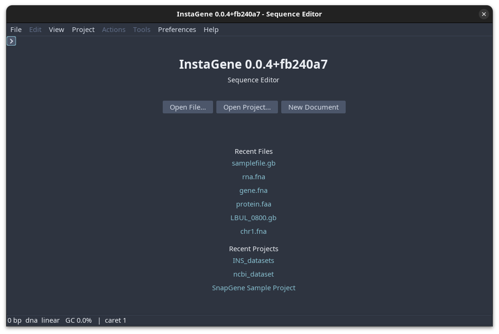

InstaGene¶
InstaGene is a toolkit for reading, editing, and analyzing DNA, RNA, and protein sequences. It gives researchers a practical desktop workspace, a scriptable command line, and a reusable Kotlin engine in one project.

Start with Open File... to work with a sequence, Open Project... to resume a project folder, or New Document to create an empty record. Recent files and projects are listed beneath these actions when available.
Start here¶
- Install and open your first file
- Learn the desktop workspace
- Follow researcher task guides
- Check format support before import or export
- Migrate from another sequence tool or ELN
- Automate analyses with the CLI
- Use the Kotlin engine
What you can do¶
In the desktop application you can:
- open FASTA, GenBank/ApE, GFF3, EMBL/ENA, Swiss-Prot, alignment, and chromatogram files;
- inspect properties, topology, composition, and annotations;
- edit bases, features, primers, names, and molecule metadata;
- view circular plasmid maps and restriction sites;
- scan restriction enzymes and simulate digests;
- design and screen PCR primers;
- search and annotate common sequence elements;
- explore ORFs, CpG, statistics, alignments, CRISPR guides, assembly, and other analysis workflows;
- save sequence records while preserving annotations and provenance where the selected output format supports them.
The CLI exposes the same core operations for scripts and batch work. The web front end provides a lightweight local HTTP interface for selected workflows.
Platform support¶
| Platform | Recommended package | Java required at runtime? |
|---|---|---|
| Windows | MSI installer | No |
| macOS | DMG application | No |
| Linux | DEB, RPM, or app-image archive | No |
| Any desktop OS | Portable GUI JAR | Yes, Java 21+ |
Native packages bundle their runtime. The portable JAR is useful when you want to choose the Java installation yourself or cannot install applications.
Supported data¶
Native sequence formats¶
FASTA, GenBank/ApE, GFF3, EMBL/ENA, Swiss-Prot, and FASTA, Clustal, Stockholm, and PHYLIP alignments are handled by the built-in sequence I/O layer. ABI/AB1 and SCF chromatograms are read as sequencing data. A file with an unknown extension is inspected by content where possible, so a text file containing bare bases can still open as a sequence.
Installed desktop packages register these native sequence formats with the host operating system. Portable distributions remain association-neutral.
Optional converters¶
The project catalogues several legacy or proprietary sequence formats, but those formats require a separately configured converter. They are not bundled parsers and should not be treated as native support. See the GUI settings and the Engine API for the converter contract.
SnapGene .dna files are deliberately not imported directly while their
license and format compatibility are under review. Export the record as
GenBank from SnapGene, then open the .gb/.gbk file in InstaGene. This
preserves the supported, inspectable conversion path without implying native
SnapGene compatibility. The format matrix and
migration guide distinguish built-in support from
converter-backed and deferred routes.
Project status¶
InstaGene is under active development. Treat tagged releases as the stable distribution point; CI artifacts are previews of a particular commit. Sequence analysis results are computational aids and should be reviewed against the experimental design, source record, and laboratory protocol before use.
License¶
InstaGene is released under the MIT license. See the repository for the full license text and contribution guidelines.